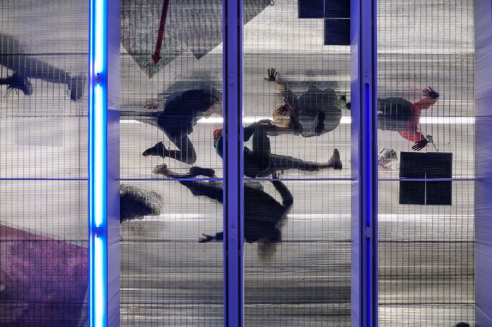
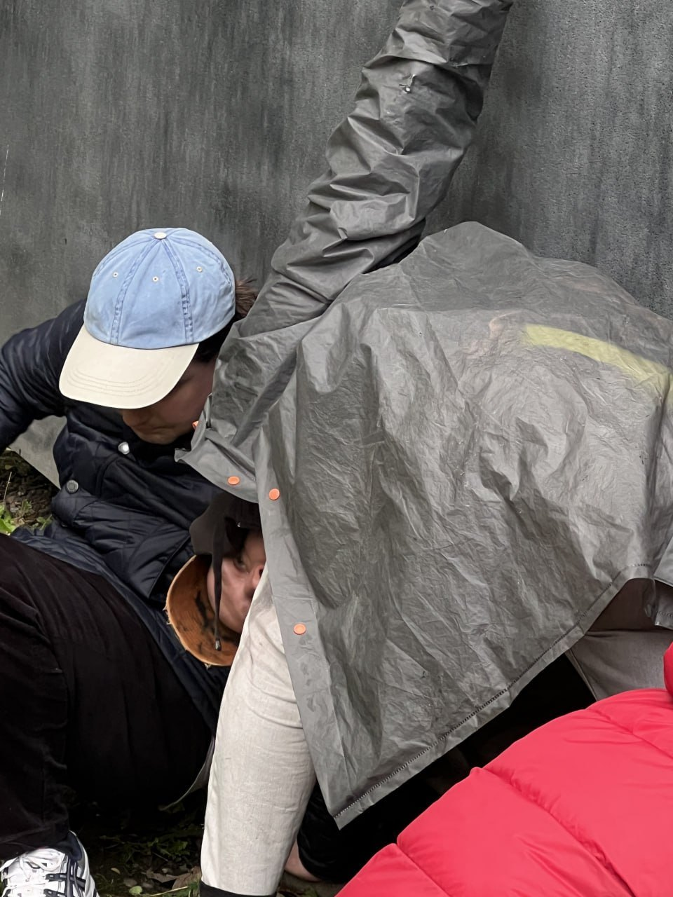
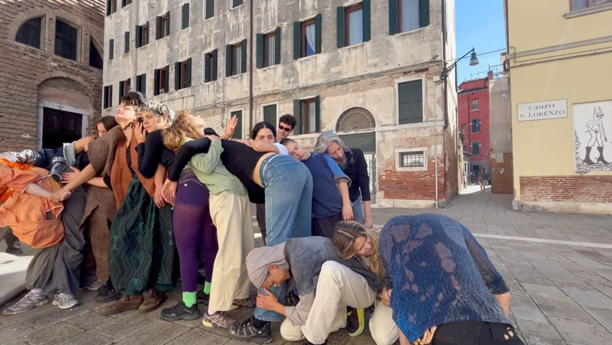
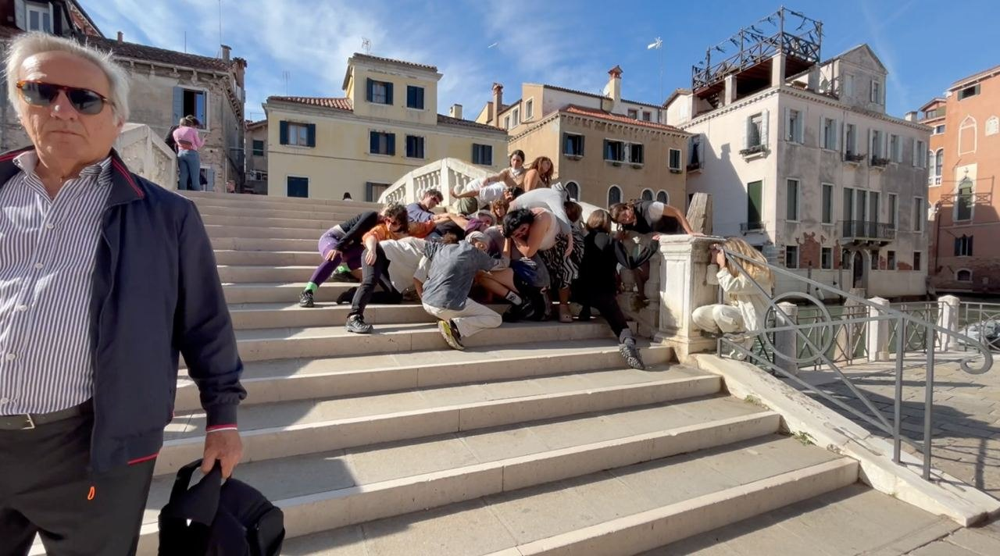
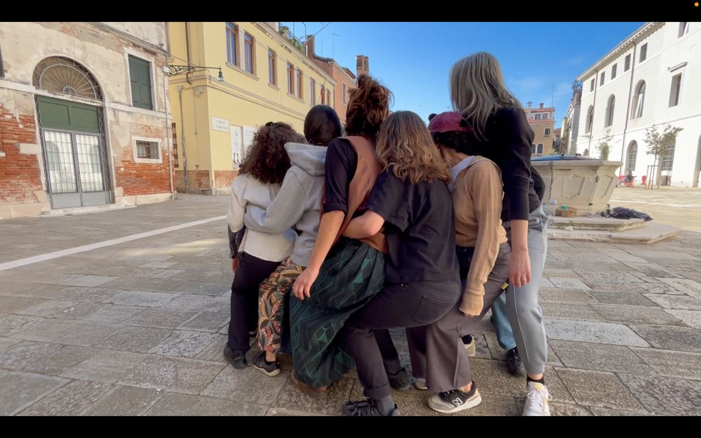
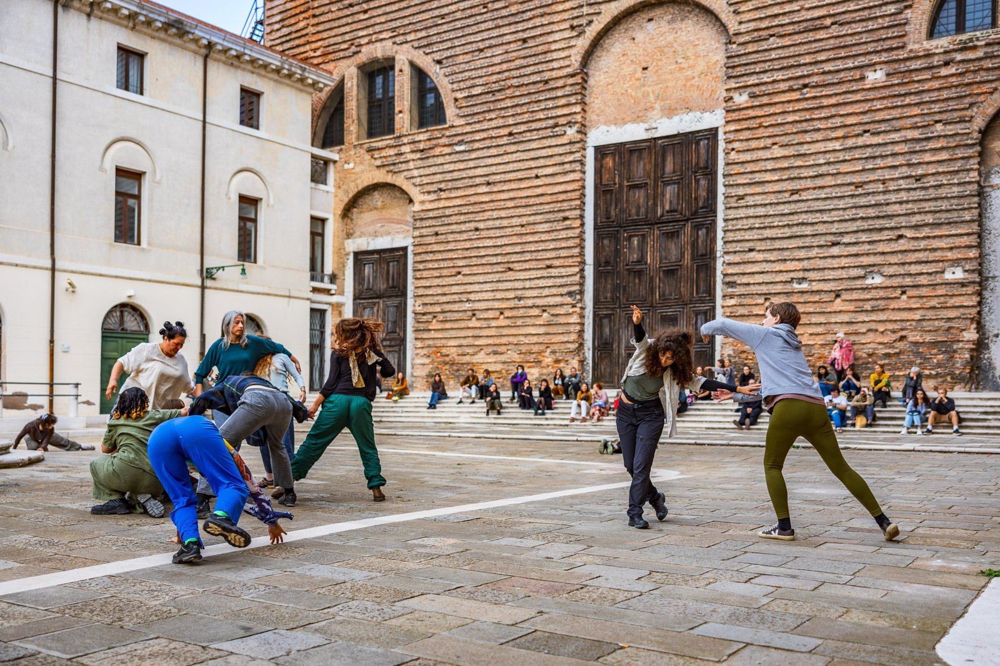
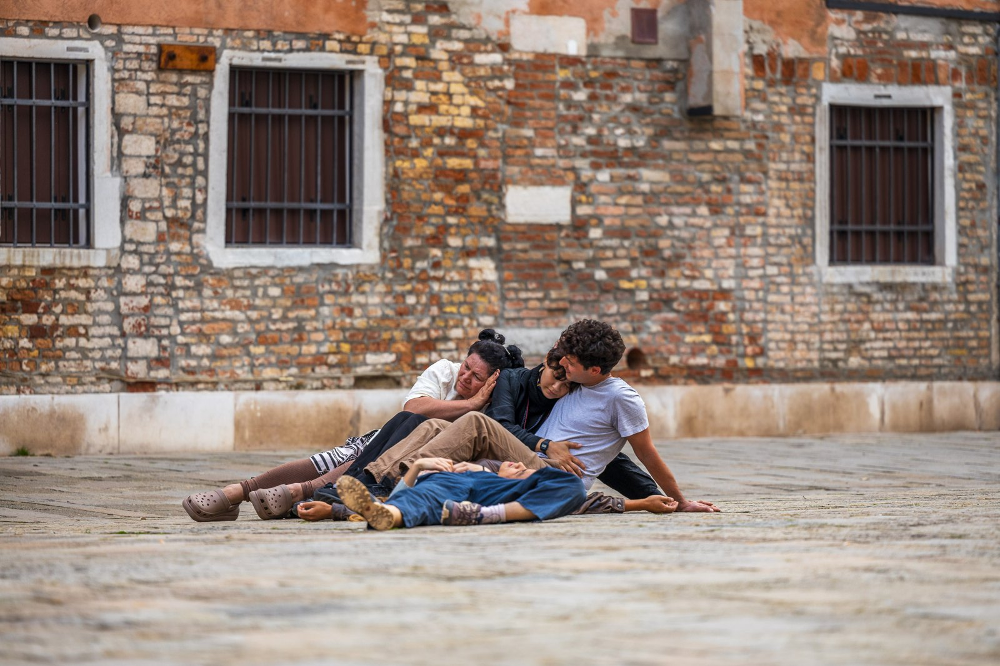
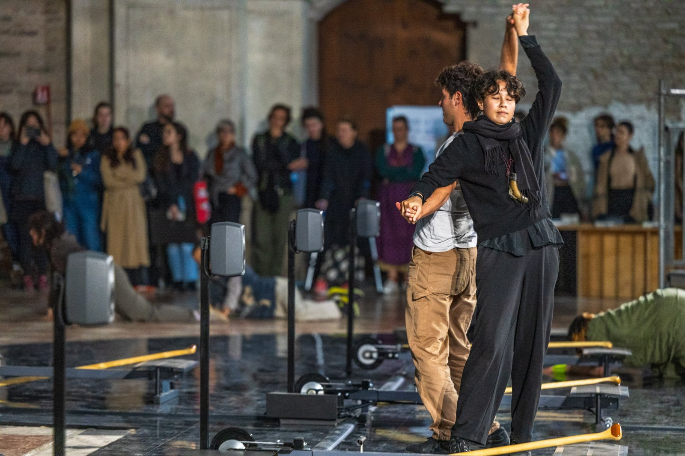

Performance / collective practice
Time Smuggler
The body as architecture. Transforming space by changing how we experience it.
All work ↗
The body as architecture. Transforming space by changing how we experience it.
Time Smuggler was a collaborative performance project exploring how bodies in relation to one another can transform our experience of space and time.
Initiated by Isabel Lewis and developed with artists from the Class for Performative Arts at the Academy of Fine Arts Leipzig, the project investigated ways of creating temporary architectures within existing architecture. Using only their bodies, movements, gestures, and voices, performers extended architectural structures, formed shifting spatial compositions, and experimented with different ways of inhabiting urban environments.
Inspired by Alina Popa's Imitation of Dream and Guy Debord's Theory of the Dérive, Time Smuggler approached dreaming and drifting as artistic practices. By becoming aware of and deliberately shifting habitual patterns of movement and perception, the ensemble explored the boundaries between waking and dreaming, individual and group, body and built environment.
Rather than following a fixed choreography, the group developed an evolving repertoire of performative scores: instructions and strategies that served as starting points for improvisation. Each iteration adapted these scores to the architecture, rhythms, and social conditions of its surroundings. Through physical interaction, moments of stillness, and changing group formations, performers altered how spaces were perceived and experienced without physically rebuilding them.
Time Smuggler unfolded through performances at the Ringlokschuppen and Galerie für Zeitgenössische Kunst (GfZK) in Leipzig, as well as at Ocean Space and in public space during a local festival in Venice. At GfZK, the project was adapted for the exhibition The Word for Museum is Forest, guiding audiences through the museum's Villa and garden. The Venice iterations formed part of the extended Biennale program.
Time Smuggler invited participants and audiences to encounter familiar spaces differently, smuggling the logic of dreams into waking life and imagining other ways of moving, sensing, and being together.
“TIME SMUGGLER proposed a collective art-making process, one that incorporates individual positions in ways that empower their voices and textures, rather than compromising them.”
Eleni Michaelidi (Curator and art historian · Curatorial statement, December 2023)
Venice · October 2024
Performance “Time Smuggler”
a score based performance
by Isabel Lewis and students of the Academy of Fine Arts Leipzig
performed by students of Leipzig Fine Art Academy, and local participants,
October 2024, Ocean Space, Venice
Photo: Enrico Fiorese (the good quality ones)
Haiguang Li (the others)
Quotes from the development process
The body becomes architecture. Architecture becomes movement.
bodies sometimes cluster, sometimes extend existing lines, and sometimes interrupt the spatial order through movement and sound
What if we could build without constructing anything?
A wall does not necessarily end where the wall ends.
We borrow space from architecture and return it transformed.
To smuggle a dream into the architecture of everyday life.
A different rhythm reveals a different city.
Between one movement and the next, another space appears."
To get lost without leaving the place.
"Be a time-smuggler." — Alina Popa, Imitation of Dream
"split out gravity, pour in grace" — Phrase recorded in the Time Smuggler score catalogue, 2024
Testimonials Performers
"We started noticing things we would normally walk past. The angle of a wall, the distance between two buildings, the way someone else's movement could change your sense of balance. Suddenly, the city wasn't something around us anymore. We were part of its architecture."
"Sometimes we would spend twenty minutes developing something that lasted only a few seconds. A particular way of leaning against another body, a movement along a wall. What interested me was how little it took to completely change the feeling of a space."
"What interested us was the possibility of making architecture with nothing but our bodies. How can a group of performers transform a space without adding anything to it? The work emerged through attention, experimentation, and the ability to respond to one another and to the conditions of each site." – Isabel Lewis
Participating venue perspectives
"Time Smuggler offered an unusual encounter with our architecture. The performers activated corners, thresholds, walls, and passages that usually remain in the background. Visitors were invited to rediscover familiar spaces through movement and shared attention."
"Rather than treating the venue as a neutral backdrop, Time Smuggler allowed its architecture to become an active part of the performance. Each movement seemed to propose a different way of reading the space."








Continue exploring
All projects ↗